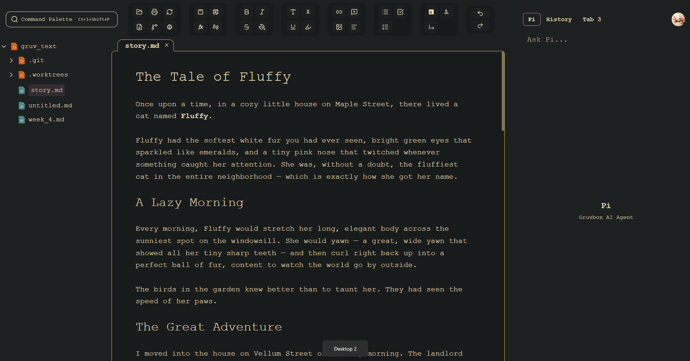
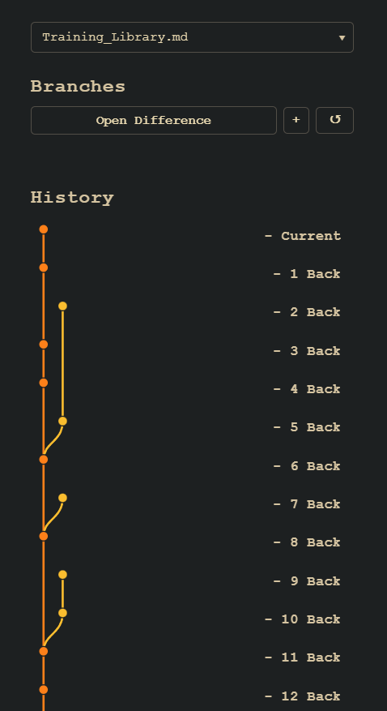
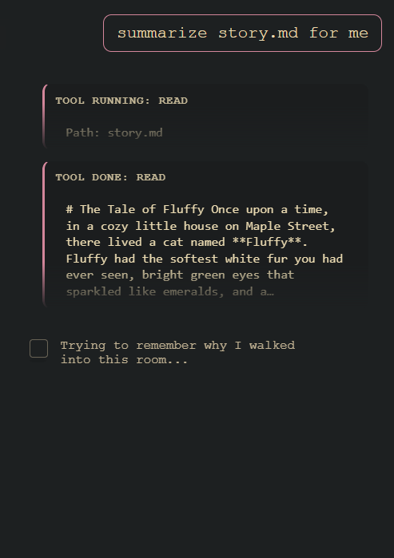

This isn't writing.
You don't control the text — it's awkward to spell out your style, your rules, and how you want each piece to read. The model fills the gaps blind, and what comes back is often slop. You are unable to truly express yourself.
Our philosphy: People are capable of using AI responsibly- they just havent been given the right tools.
You don't control the text — it's awkward to spell out your style, your rules, and how you want each piece to read. The model fills the gaps blind, and what comes back is often slop. You are unable to truly express yourself.
The old word processor: familiar, heavy, and still shaped for print-era memos. It wasn't built for how drafts move today, and nobody feels happy working in it.

We fuss over layout, type, and pacing so the screen stays gentle on the eyes — and we treat older drafts as something you can always find again, not something you cross your fingers and hope is still there.
You know this: a sentence felt perfect at lunch and wrong by dinner. The assistant might hand you something lovely and something shaky in the same breath. Most tools leave you with one fragile draft or a pile of duplicate files. Here your work stays in order — what you wrote, the moments you saved when the words were flowing, and separate tries when you or the assistant want to experiment without throwing away what already worked.
You can look back, set two moments side by side, and change your mind more than once. Nothing you cared about quietly disappears. The picture here is that trail: a plain record of how the piece grew.
You can move quickly and still stay in charge: nothing the assistant suggests becomes part of the draft until you say so — all of it, none of it, or just a single line. Speed doesn't get to rewrite the page behind your back.
Below · your versions, shown together in the editor

Underneath that philosophy sits a pragmatic editor — pick your partner model, see every change, rescue any moment from history.
Drop in any AI model via a pre-configured connection — no API keys to wrangle, no technical setup required.
Every keystroke is tracked. Step back to any previous version of your document at any point — yours and the AI's changes included.
Rich text renders as structured decorations while you stay in plaintext mode — so models see the same intents you see. Markdown on a rigid grid keeps the caret honest and your layout stable.
The AI suggests, you choose. Accept all, reject all, or pick individual changes from a side-by-side diff view.
Diagrams and math aren't afterthought screenshots — they plug into an AI‑friendly substrate that keeps extending without orphaned legacy documents.
A low-contrast palette tuned for marathon sessions — the same intentionality runs through layout, pacing, and how often we interrupt flow.
The assistant isn't a black box that forgets your world every session. You set the guardrails once — style guides, house rules, who your characters are — and the model works inside them. You decide what it reads, what it writes, and which edits actually touch your draft.

Stop retyping the same brief in every prompt. Attach style documents, explicit rules (show don't tell, POV, tone), and character sheets — the assistant treats them as ground truth, not something you have to re-explain each time. That shapes both what you ask for and what you get back: output that stays inside the lines you drew.
Memory persists across the work: the assistant remembers your project context instead of starting cold. Use commands to drive it, and let it explore the files you allow — so answers and edits are grounded in your tree, not a pasted snippet from last week.
When the model edits the document you're looking at, every change is highlighted. Accept a line, reject another, or revert the batch altogether — you choose what becomes real text, with no silent rewrites behind the scenes.
Below · assistant with rules and memory — you approve every change to the draft
Gruvbox Studio is young: rough edges, strong opinions, and a bet that the best writing won't come from handing the keys to a black box. If that story sounds like yours — if you want tools that remember your intent, show their work, and let you steer — ask for early access. You'll get previews, plain-spoken release notes, and a seat at the table where we decide what ships next. Skepticism welcome; it keeps us honest.